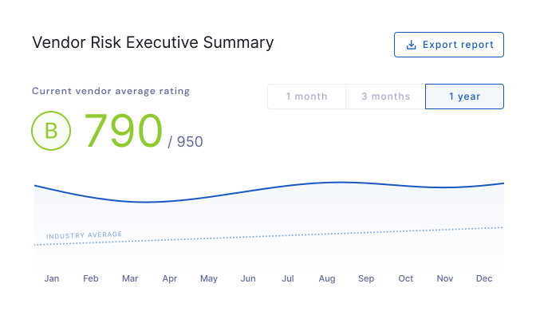

Monitor vendors
Security ratings
Instantly understand your vendors’ security posture with our data-driven, objective, and dynamic security ratings. Our security ratings are generated through the analysis of trusted commercial, open-source, and proprietary threat intelligence feeds and non-intrusive data collection methods.
Vendor security ratings
Instantly understand your vendor’s overall security posture.
 Easy to understand for non-technical stakeholders and senior management
Easy to understand for non-technical stakeholders and senior management- Updated multiple times a day
- Based on the analysis of each of your vendor’s underlying domains and their security posture
- Takes into account risks identified in UpGuard security questionnaires
Domain security ratings
Explore the security posture of individual domains and drill into issues.
- Based on the analysis of hundreds of individual risks across five risk categories
Custom notifications
UpGuard comes with a host of default notifications, and allows you to create and manage custom notifications as well. These can be used for in-app and email alerts, or webhook triggers.
- Get notified when you organization score drops
- Get notified when a vendor's score drops below a threshold
- Custom notifications can also be used to trigger webhook integrations
- Customize notifications based on labels and vendor tiers
Third-party risk
Get real-time insight into your vendors’ security performance, misconfigurations, and risk profile. Track their performance over time and get started in minutes, not weeks, with our fully integrated solution and API. Because we use externally verifiable information, you can monitor any vendor, instantly.
Vendors
Instantly find and monitor your vendors with just their domain name.
- Instant and continuous visibility into the cyber health of any vendor
- Monitor their security performance over time
- Get notified immediately when their security degrades
Vendor inventory
Vendor inventory helps you find, track, and monitor the security posture of any organization instantly. You can categorize vendors, compare them against industry benchmarks, and see how their security posture is changing over time.
- All monitored vendors in a centralized location
- Easily find vendors using the search bar
- Sort by vendor tier, name, score, or labels
Vendor tiering
Vendor tiering allows you to classify your vendors based on the inherent risk they pose to your organization, and adjust the level of assessment you do on each vendor as a result.
- Easily filter the vendors list by tier
- See a vendor's tier when viewing any vendor-specific page in the platform
- Customize notifications for a tier of vendors
- Adjust the level of assessment you do on each vendor based on their tier
Custom vendor attributes
Attributes provide you with the ability to add additional structured information to manage individual vendor relationships that have common themes.
- Customize and create attributes based on your business requirements and reporting needs
- Improved filtering and sorting allows for more efficient analysis of data
- Easily export vendor information based on common themes for reporting and analysis
- Consolidate key vendor information in one centralized location
Vendor portfolios
The vendor portfolios feature allows you to organize your monitored vendors by different use-cases into separate lists. Once setup, you can control user access for each of the portfolios.
- Easily filter, view and report the performance of individual portfolios
- Maintain and report on separate vendor portfolios for different departments or groups within your organization
- Manage permissions so that users only have access to the portfolios and vendors they need
Portfolio risk profile
Identify common cybersecurity issues across your vendor portfolio and request remediation.
- Ordered by severity
- Grouped by finding
- See the number of vendors with the risk
- Filter by risk category, label, or vendor
- Rely on UpGuard’s remediation workflows
Vendor summary
Get an executive-level overview of an individual vendor’s security posture.
- Key vendor information
- Security rating
- Questionnaire and remediation context
- Twelve-month security performance
Risk profile
Understand an individual vendor’s risk profile and drill down into risks shared across their infrastructure.
- Transparent security ratings
- Intelligent risk categories
- Updated daily
- Real-time risk insights
Compliance reporting
The compliance reporting feature enables customers to view their own or their vendor’s risk details (including web risks) mapped against recognized security standards or compliance frameworks like NIST CSF or ISO 27001.
- Assess if your organization or a vendor complies with a security framework
- Easily view sections of the compliance framework that your organization or the vendor does or does not comply with
- Understand the risks detected in specific sections of the compliance framework
Domains and IPs
Dive deep into an individual vendor and view the domains and IPs that belong to them and their corresponding cyber risks.
- See the security rating of each domain and associated risks
- Automatic vendor domain discovery, no manual input needed
- See active and inactive domains
Vulnerabilities
Discover vulnerabilities that may be exploitable in the software that is running on your vendor’s website.
- Automatically detected through exposed information in HTTP headers and website content
- Each vulnerability has CVE ID information and a CVSS, a numerical score between 0 and 10 that reflects the severity
Vendor data leak detection
Don't get surprised by a vendor data leak. Provide UpGuard with a list of vendors you want to monitor, and get notified when any of them leak their data.
- Prevent data leakage due to third party breaches
- Identify your critical risk vendors
- Manage all third-party risks
- Collaborate with vendors on remediation efforts
- Get analyst support to close the leaks
Fourth-party risk
Stop relying on third-parties to monitor your fourth-parties and get instant insight into your fourth-party vendors. While fourth-parties aren’t necessarily contractually connected to your organization, they still represent risk that needs to be monitored.
Concentration risk
Instantly understand your organization’s most common fourth-party vendors.
- Add fourth-parties to your monitored vendors list
- Know how to plan for disaster recovery
- Instantly assess downstream impacts
- Streamline your breach response
Supply chain
Dive deep into an individual vendor’s supply chain and understand the impact fourth-parties on your security posture.
- Identify who your vendors do business with and validate their use of subcontractors
- Validate assessment responses from third-parties on the use of or reliance on fourth-parties
Evidence chasing
Any third party risk management program starts with the collection of security evidence. And it takes time and effort to chase your vendors to complete security questionnaires, provide additional evidence and then validate their responses. Let our analysts do this for you, so you can better allocate your security resources.
Vendor registration
Instantly request our third-party risk analyst team to kick off a new vendor risk assessment.
- One-click request through the UpGuard platform
- Collect relevant information about this vendor, to kick off an assessment
- Let your vendor know that UpGuard will be assessing them
Vendor classification
Prioritize and tier your vendors, so we apply the appropriate level of due diligence through the risk assessment process. You can decide if UpGuard should simply chase evidence, or conduct a risk assessment and facilitate remediation.
- Classify your vendors by criticality
- Prioritize UpGuard risk assessment activities
Vendor administration
Let us chase and follow up your vendors to ensure they complete questionnaires and provide relevant evidence.
- Don't let vendors avoid giving you evidence
- Track progress in a single dashboard
- Get updated as soon as vendor evidence is available
Questionnaire selection
UpGuard’s meticulously designed questionnaire library means you no longer have to create questionnaires from scratch.
- UpGuard questionnaire
- Short-form UpGuard questionnaire
- ISO 27001 questionnaire
- NIST Cybersecurity framework questionnaire
- PCI DSS questionnaire
- COBIT 5 questionnaire
- ISA 62443-2-1:2009 questionnaire
- ISA 62443-3-3:2013 questionnaire
- GDPR questionnaire
- CIS Controls 7.1 questionnaire
- NIST SP 800-53 Rev. 4 questionnaire
- CCPA questionnaire
- Modern slavery questionnaire
- Pandemic questionnaire
- Security and privacy program questionnaire
- Web application security questionnaire
- Infrastructure security questionnaire
- Physical and data centre security questionnaire
Response validation
Improve the speed and consistency of your vendors' responses to information requests. We'll validate responses to security questionnaires and requests for additional evidence.
- Be certain that vendor responses make sense
- No unanswered questions
- Link additional evidence to their responses
Assess and remediate vendor risk
Risk assessment
Stop using lengthy and error-prone spreadsheet-based risk assessments. Let us guide you each step of the way from documenting the evidence you referenced to adding commentary. When you’re done, you can save your assessment inside the UpGuard platform.
Vendor users
Vendors of UpGuard customers can create a free account to answer questionnaires, complete risk assessments and to create a shared vendor profile.
- Vendors can easily respond to security questionnaires from UpGuard customers
- Vendors can invite collaborators to complete risk assessments requested by UpGuard customers
- Vendors can save answered questionnaires to their shared profile to avoid answering the same questions multiple times
Vendor comparison
UpGuard's vendor comparison tool lets you compare the security posture of up to four vendors side-by-side and dive into the details to see which vendor represents the lowest risk.
- Great way to communicate the security posture of new vendors to stakeholders who may not have security expertise
- Save time when deciding which new vendor to onboard
- Easily evaluate potential alternatives that offer improved security
Vendor risk waivers
Vendor risk waivers let you waive vendor risks identified by automated scanning, security questionnaires and additional evidence.
- Allows you to see a vendor's score after waiving the risks
- Waived vendor risk will stop appearing in the vendor’s risk profile and their security rating will be recalculated for your organization
- Streamline the risk assessment workflow by creating, reviewing and waiving risks within a risk assessment
- View the public risk waivers of other UpGuard customers, and choose whether to accept those risks
Vendor risk matrix
Quickly focus on the most impactful areas of your vendor risk management program by visualizing your vendor portfolio risk by Security Rating and Vendor Tier.
- Identify vendors with the highest risk exposure to the business to drive remediation with your vendors
- Quickly visualize your vendor portolio to enable decision making on which vendor risks to focus on first
- See a filtered list of your vendors and their risks so you can start reducing your cyber risk with maximum impact
Remediation requests
Creating a risk assessment for a vendor allows you to specify the evidence reviewed, document findings based on this evidence, record who conducted the assessment, and more. It provides a way to capture a snapshot of the risks and evidence at the time this vendor was assessed
- Specify the evidence you reviewed as part of the assessment including UpGuard security questionnaires and automated scan results
- Document your findings based on evidence
- Record who conducted the assessment
- Export the assessment as a PDF
- Send remediation requests, track the progress of each item under remediation and have a record of the remediation request embedded directly in a point-in-time risk assessment
- Reduce the time it takes to perform and document a vendor risk assessment
- Efficiently monitor and track the risk assessment of your vendors
Additional evidence
Capture and store security and compliance-related documentation and identify new risks
- Securely store security and compliance-related documentation
- Create risks inside the platform and associate them with a specific vendor
- Use identified risks in risk assessment workflows
Security questionnaires
Accelerate your questionnaire exchange process by using UpGuard’s powerful and flexible security questionnaire tools. UpGuard’s meticulously designed questionnaire library means you no longer have to create questionnaires from scratch.
Security questionnaires
Automate security questionnaires to get deeper insights into your vendors’ security and scale your security team by 10x.
- Choose from more than twenty industry-standard questionnaires
- Select multiple vendors, and send them the same questionnaire simultaneously
- Easily set deadlines and send reminders to ensure questionnaires are completed
- Track the status of each outgoing security questionnaire
- A sophisticated audit log and messaging built-in
- Quickly review only the answers that have changed with a side-by-side comparison of different version of questionnaires that have been sent to your vendors
Questionnaire library
Use questionnaires based on regulations and best practices from our industry leading library.
- UpGuard questionnaire
- Short-form UpGuard questionnaire
- ISO 27001 questionnaire
- NIST Cybersecurity framework questionnaire
- PCI DSS questionnaire
- COBIT 5 questionnaire
- ISA 62443-2-1:2009 questionnaire
- ISA 62443-3-3:2013 questionnaire
- GDPR questionnaire
- CIS Controls 7.1 questionnaire
- NIST SP 800-53 Rev. 4 questionnaire
- CCPA questionnaire
- Modern slavery questionnaire
- Pandemic questionnaire
- Security and privacy program questionnaire
- Web application security questionnaire
- Infrastructure security questionnaire
- Physical and data centre security questionnaire
- SolarWinds Questionnaire
- Kaseya Questionnaire
- Apache Log4J - Critical Vulnerability Questionnaire
- HECVAT questionnaire
- HIPAA questionnaire
Questionnaire builder
Questionnaire builder lets you build custom questionnaires for specific use cases as per your requirements. You can use one of our standard questionnaires to get started and edit the questions or create one from scratch.
- Use questionnaire library to get started
- Supports many question types like single-select, multi-select, full text and file uploads
- Supports conditional logics for building sophisticated questionnaires
- Build simple questionnaires for vendor onboarding or complex security questionnaires for vendor risk assessments
- Automatic risk identification and score updates based on the responses
Security profiles
Save time, eliminate the email back and forth, and onboard new vendors faster by accessing the security information of a potential vendor who has published security information to their UpGuard Security Profile.
Vendor security profiles
Eliminate email tennis and instantly access information published by your vendor on their security profile. To accelerate the vendor assessment process, UpGuard also collects and includes publicly available information to the Vendor Security Profile.
- Vendor security rating
- Industry average security rating
- Vendor information
- Completed security questionnaires
- Supporting documentation
- Publicly available security and privacy pages
Workflows
Simplify and accelerate how you request remediation of cybersecurity risks from your third-party vendors. Use our real-time data to provide context to your vendors, rely on our workflows to track progress, and get notified when issues are fixed.
Remediation workflows
Use inbuilt workflows to remediated risks identified in security questionnaires and by the UpGuard platform.
- Fix man-in-the-middle risks
- Find insecure SSL/TLS certificates
- Understand vendor email security
- Enforce HSTS
- Close unnecessary open ports
- Fix vulnerable software
- Prevent HTTP accessibility
- Secure cookie configuration
Remediation planner
See the potential improvement in security ratings from remediating a risk or set of risks instead of knowing the impact after the fact.
- See how specific risks impact security ratings
- Prioritize risks to be mitigated based on the improvement in rating
- Securely create and share a remediation plan with your team or your vendors within UpGuard
- Collaborate with internal teams and third-party vendors within UpGuard
- Track the progress of each remediation request in a centralized location
Managed third-party risk
Stop using lengthy and error-prone spreadsheet-based vendor risk assessments. Let our analysts perform these for you, right from within the UpGuard platform. From evidence obtained from security questionnaires to additional evidence such as security documents, we combine these with security ratings and data leak detection to create a comprehensive third-party risk assessment. When we’re done, you can access the risk assessment in the platform and we can help you with your remediation strategy.
Managed risk assessment
Our analysts use UpGuard platform's in-built risk assessment process to comprehensively assess your third-party vendors.
- Request a managed risk assessment in one click
- Track the progress of your risk assessments
- Review completed risk assessments
- Review the evidence (like security questionnaire) we used to complete the assessment
- Include results from security ratings, questionnaires and data leaks scans
- Export the assessment as a PDF report
Questionnaire analysis
Our team will analyze all security questionnaire responses and publish them in the risk assessment report.
- Analyze security questionnaire responses
- Assign risk severity
- Security questionnaire ratings
- Single view of risks in the assessment report
Vendor data leak assessment
Our managed risk assessments include a vendor data leak search. Our team will analyze the results and include any identified risks in the assessment report.
- Prevent data leakage due to third party breaches
- Identify vendors with poor data security
- Manage third party risks
- Collaborate with vendors on remediation efforts
Additional evidence analysis
Our team will analyse additional evidence like publicly available security reports and audit reports (e.g. SOC-2, ISO27001).
- Comprehensive view of a vendor's security posture
- Reuse existing documentation to reinforce the risk assessment
- All risks identified are published in a risk assessment report
Risk remediation
Eliminate the pain of chasing vendors to remediate risks. Our analysts will use the results of a vendor risk assessment to create a remediation plan and expedite the remediation process. Similarly, we'll also help your close any data leaks for your organization.
Remediation planning
Our analysts will prepare a remediation plan based on the risk assessment report.
- Risk mitigation recommendation for each identified risk
- Save time and deploy security resources more efficiently
- PDF version available
Managed remediation process
Ease the pain of chasing vendors for risk remediation. Our analysts proactively follow up with your vendors, helping shorten the remediation cycle.
- Chase vendors to remediate risks
- Record who conducted the remediation
- Improve your own security rating by remediating vendor risks
Remediation tracking
Track the progress of remediation activities through a single, easy-to-use dashboard.
- Single remediation dashboard
- Track the progress of your requests
- Know when risks are remediated
Close data leaks
UpGuard gives you everything you need to close data leaks before they fall into the wrong hands.
- Review findings within the platform
- Remediate leaks with support from our analyst team
- Get notified in-app and via email when leaks are closed
- Close leaks and prevent costly data breaches
Manage vendor risk

Reporting and insights
The Reports Library makes it easier and faster for you to access tailor made reports for different stakeholders, all in one centralized location. Effectively report on your third-party risk management program, including to the Board and C-Suite and other interested parties.
Executive reporting
Use our prebuilt executive reporting suite to get insights right inside the platform. With structure access to your data, you can do things such as: see your average vendor security rating and twelve-month history, explore your current vendor risk ratings breakdown, and find your highest and lowest rated vendors.
- Board Summary report provides a high level snapshot of key factors about your company's cyber security posture
- Prebuilt reporting for your third-party risk management program
- Current average vendor rating and twelve-month history
- Distribution of vendor ratings and twelve-month comparison
- Highest and lowest-rated vendors
- Most and least improved vendors
- Concentration of fourth-party technologies
Vendor risk report
Generate an in-depth PDF report that can be shared with internal stakeholders and vendors.
- Summarized or detailed Vendor Summary report to help reduce third party risks
- Outlines security posture of vendor
- Configure to include automated scanning, questionnaires, and additional evidence
- Share with colleagues, board members, or vendors without having to invite them to UpGuard
- Give vendors the context they need to remediate risks
- Most and least improved vendors
- Concentration of fourth-party technologies
Vendor subsidiaries
Single view that allows you to see the security performance of a vendor organisation with multiple subsidiaries
- A vendor's entire security posture in one place
- Drill into vendor's subsidiary security performance
- Easily navigate between vendor's subsidiaries
- Whole-of-organisation view that lets you see how individual risks affect vendor's entire portfolio
Custom report templates
Ensure consistency and standardization of your reports by creating and saving custom report templates.
- Add custom commentary and configure which elements to include in your report
- Save time and create templates that can be utilized by your team to run custom reports
Business operations
Share access to your UpGuard account with other team members with confidence. Each user gets an individual account with fine-grained access control.
Roles and permissions
Tailor access for your team to ensure that sensitive information and actions are protected. Keep track of who has access to your UpGuard account and remove team members easily.
- Get fine-grained control on providing specific users access to specific products and features
- Create roles, and associate permissions with these
- Grant users access to a role
- A change in permission associated with a role applies to all users with that role
Templates
Templates lets administrators set up templates for remediation requests, risk assessments, and questionnaires sent from the UpGuard platform.
- Save time and ensure consistency
- Uniformity across teams and processes
- Reduce mistakes and errors caused by copying and pasting text across documents
Co-branding
Co-branding lets you add your company branding to all emails and any vendor risk reports generated in the UpGuard platform.
- Showcase your brand in all external communications done via emails
- Create professional security reports with your branding on it
- Make it easier for vendors to recognize questionnaires sent by you by adding your logo to it
Account security
Secure access to the UpGuard platform and your account data. Integrate with various SSO options like Microsoft Azure, Okta, and Ping Identity. As long as your identity provider has a SAML interface we can integrate with it.
- SSO options like Microsoft Azure, Okta, and Ping Identity
- SAML integration
Collaboration notes
Attach notes for your teammates on remediation requests, risk waivers, and data leaks to give them context when they jump into the platform.
Documents and contacts
Capture contact details and store relevant documentation on a vendor directly in the UpGuard platform.
- Know exactly where to find contact details and documents about a specific vendor
Audit log
Keep track of important events and who performed them inside the UpGuard platform.
- Searchable
- Real-time reporting and data
- Filter by user, event type, and time
- Streamline workflows
Scheduled reports
Use the reports feature to see the status of queued reports, and download, delete or archive completed reports.
- See all exported reports in one place
- Hit export and continue working while the report gets generated in the background
- Create and manage schedules for any recurring reports
Shared assets
Vendor information collected by an entity in a larger group of companies can now be shared with other related entities by easily providing them access to it within the UpGuard Vendor Risk platform.
- Use evidences collected by related entities
- Reuse existing risk assessments
- Avoid repetition and save time
- Greater visibility of the total risk exposure to a vendor
Third-party integrations
Integrate and extend the UpGuard platform with other tools with our easy to use API that can save hours of human time.
Jira integration
Quickly and easily push events and notifications from UpGuard into any Jira project, giving you the flexibility to manage workflows to address security risks promptly
- Save time by quickly creating Jira issues, prioritizing, and assigning them to the relevant person
- Ensure people receive the correct information so they can promptly investigate and remediate security risks
- Easily maintain your workflow and present only the information you want to the relevant people in your team
Slack integration
Connect UpGuard to your Slack workspace to get the notifications you need directly into a Slack channel of your choice, giving you the flexibility to display the information you need to act promptly.
- Easily integrate your Slack workplace to receive notifications from UpGuard
- Setup triggers for notifications, decide what Slack channel to send them to, and customize your messages.
- Get instantly notified on Slack, and remediate security faster
Zapier integration
Using Zapier, an automation platform that connects to thousands of apps, you can now connect UpGuard to any other app that Zapier supports.
- Automate regularly used workflows without coding
- Connect UpGuard to thousands of apps on the Zapier platform like JIRA, Trello, Google Sheets, ServiceNow and many more
- Get instant notifications on Slack, Microsoft Teams and other collaboration apps and remediate security faster
ServiceNow integration
Get vendor security ratings in ServiceNow.
- Add UpGuard as a scoring provider in ServiceNow
- Automatically add vendors for risk scoring in UpGuard
UpGuard API
Access information about your UpGuard account programmatically.

UpGuard Vendor Risk Datasheet
UpGuard Vendor Risk continuously monitors your vendors, automates security questionnaires, and reduces third and fourth-party risk.
- Key features and benefits of UpGuard Vendor Risk
- More info on UpGuard Vendor Risk and UpGuard

Simple, transparent pricing
Start monitoring your vendors from $15,000 per year.
Free instant security score
How secure is your organization?
Request a free cybersecurity report to discover key risks on your website, email, network, and brand.
- Instant insights you can act on immediately
- Hundreds of risk factors including email security, SSL, DNS health, open ports and common vulnerabilities


Book a free demo
Book a free, personalized onboarding call with one of our cybersecurity experts.